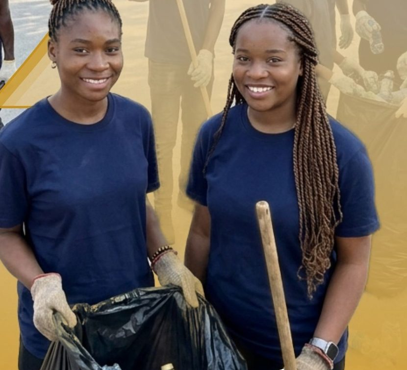

Building Bridges To The Harvest
Reaching people and communities beyond the Church walls.
Learn how the Building Bridges To The Harvest (BBTTH) Initiative and the Lusaka Community Hub (LCH) Ministry work together, and what drives us.
How we are organised
- RCCG
IWC RCCG IWCThe Church that birthed the initiative  Building Bridges To The HarvestBBTTH Initiative Reaching people and communities beyond the Church walls
Building Bridges To The HarvestBBTTH Initiative Reaching people and communities beyond the Church walls Lusaka Community Hub MinistryThe implementing arm: practical, community-based programmes
Lusaka Community Hub MinistryThe implementing arm: practical, community-based programmes- Seven Community HubsCare, learning, legacy, leadership, wellbeing, service and media
Building Bridges To The Harvest and the Lusaka Community Hub
The Building Bridges To The Harvest (BBTTH) Initiative is an initiative of RCCG IWC aimed at reaching people and communities beyond the Church walls. The Lusaka Community Hub (LCH) Ministry is the implementing arm of the BBTTH Initiative, translating this vision into practical community-based interventions and programmes.
BBTTH stands for Building Bridges To The Harvest. The initiative carries the Church's care into everyday community life, so that people who may never walk into a church building can still be reached, supported and empowered.
The Lusaka Community Hub (LCH) Ministry turns that vision into action through seven Community Hubs, each focused on a different area of need.
- Care
- Mentorship
- Empowerment
- Service
- Connection

One community.
To help individuals grow, strengthen families and transform communities through care, mentorship, empowerment, service and meaningful connection.
People and communities beyond the Church walls who are reached, supported and empowered to flourish, and who in turn build up others.
What we set out to achieve
Each objective is carried forward by one of our seven Community Hubs.
Care and connection
Receive people with compassion, listen to their needs and connect them to the right support through the Care Room Hub.
Learners and young people
Help students succeed academically and personally, and prepare them for further education and work.
Seasoned adults
Keep retirees and seasoned adults connected, purposeful and sharing their wisdom across generations.
Leadership
Develop confident, responsible and servant-hearted leaders through mentorship and training.
Wellbeing
Build financial literacy, responsible debt management and healthy living in individuals and families.
Community service
Mobilise volunteers for practical service, including the Keep Lusaka Clean initiative.
Awareness
Tell the story of the Hubs so that more people can find them, join them and benefit from them.
How we work
We meet people with kindness and treat every need with care.
We are honest and transparent in what we say and do.
We give our time and skills freely for the good of others.
We do our work well, because people deserve our best.
We honour the dignity of every person, whatever their background.
We take responsibility for our commitments and their results.
We achieve more by working together with partners and communities.
We'd love to hear from you
Our Secretariat will direct your enquiry to the right Hub or team, whether you're looking for support, a programme, a way to volunteer or a partnership.
Contact person, BBTTH Secretariat
Call or WhatsApp